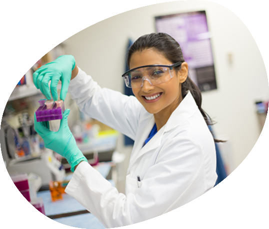

Clinical Pharmacist
- Graduates can work in hospitals as health care team member


Get In Touch
Share a few details and our admissions counsellors will walk you through eligibility, fees, scholarships and the application timeline — no obligation.
Fill this in and we'll reach out shortly.
Overview
Pharm.D is a Professional Pharmacy doctoral programme of 6 years duration after 10+2 (science academic stream) which includes 5 yrs of academic study + 1 year of internship or residency.
Pharm.D curriculum is different than that of B.Pharm, it includes extensive didactic clinical preparation and a full year of hands-on practice experience.
Both B.Pharm and Pharm.D are the registrable qualification for practicing pharmacy profession under the Pharmacy Act. B.Pharm is a 4-year course and Pharm D is 6 years course including one year of clinical internship. Pharmacy practice component in all spheres of Pharmacy professional services to develop knowledge and skills in various area like Hospital Pharmacy, Community Pharmacy, Pharmacotherapeutics, Clinical Pharmacy, Biostatistics and Research Methodology, Clinical Toxicology, Clinical Research, Pharmacoepidemiology, Pharmacoeconomics, Clinical Pharmacokinetics and Pharmacotherapeutic Drug Monitoring are emphasized in Pharm D programme and after Pharm D qualification the professionals are eligible to undertake Ph.D. programme.



10+2 (PCM/B) from a recognized board.
Placements
Our institution is providing a good career guidance and assistance in the final year through placement cell on many multinational pharma companies, few are Syngene, Indigene, Accenture, Novo Nordisk, Bioclinica, Cactus, IQVIA, Fortis Research Systems, Molecular Connections, TCS, PPD Pharmaceuticals, Amura Health, Nayya Technologies, HCG Cancer Hospitals, EMBARC, Vyuhgenics, Eli Lilly and many more...
How We Teach
About the Programme
Careers
- Graduates can work in hospitals as health care team member
- Graduates are eligible to work as teaching faculty in Pharmacy Colleges
- Graduates can be able to work as Clinical Research Associate in many Clinical Research Organizations (CROs).
- Graduates can work as Medical Writer in many pharmaceutical companies and health care setups.
- Graduates will be hired for to monitor the drug safety profile by pharmaceutical companies and CROs
- Graduates can provide support for the pharmaceutical clients with their expertise and knowledge
- Graduates can work as pharmacovigilance associate and work in drug safety related issues
- Clinical research is a flourishing area where pharm D graduates can explore their career in different domains.
Beyond the Classroom
Core Subjects
About the Programme
Pharm.D course is a Professional Pharmacy doctoral programme of 6 yrs duration after 10+2 (science academic stream) which includes 5yrs of academic study + 1 year of internship or residency in hospitals.
Yes, Pharm.D is a registrable qualification under the Pharmacy Act.
Yes. After Pharm.D the candidate is eligible to register for Ph.D.
Yes, for the purpose of practicing Pharmacy Profession under Pharmacy Act.
Both B.Pharm and Pharm D are the registrable qualification for practicing pharmacy profession under the Pharmacy Act. B.Pharm is a 4 yrs course and Pharm D is 6 yrs course including one yr of clinical internship.
Pharmacy practice component in all spheres of Pharmacy professional services like Hospital & Clinical Pharmacy, Community Pharmacy, clinical research, regulatory, formulation development, quality control are emphasized in Pharm D programme and after Pharm D qualification the professionals are eligible to undertake Ph.D. programme.
You cannot compare it with MBBS, both courses are hard in their own way. MBBS belongs to core medical but Pharmacy is a paramedical professional course. but it will be very easy for you, if you willing to learn about life sciences, chemistry and etc…
Financial Support
Over ₹140 crores in merit scholarships have been given to PES University students since 2014.
Merit Scholarships
Awarded on CGPA / SGPAMerit Certificate + 50% Tuition Fee Refund for Top 5% of the Students based on their CGPA.
Merit Certificate + 40% Tuition Fee Refund for the next 20% of the Students based on their SGPA.
Merit Certificate for Students securing 7.75+ SGPA.
PES Loyalty Program
Awarded on family / institutional ties, every year of studyChildren of full-time staff, 5+ years employment.
Graduates of any PES institution or sister concern.
Siblings of currently enrolled PES students.
Siblings and children of PES University alumni.
University Highlights
The accreditations and rankings behind PES University as a whole.
Among new universities under 5 years, ranked by KSURF.
PES University holds NAAC's top-grade accreditation nationally.
Times of India B-School Rankings, 2021.
Second only to IIM Bangalore among B-School aspirants, per Times of India.